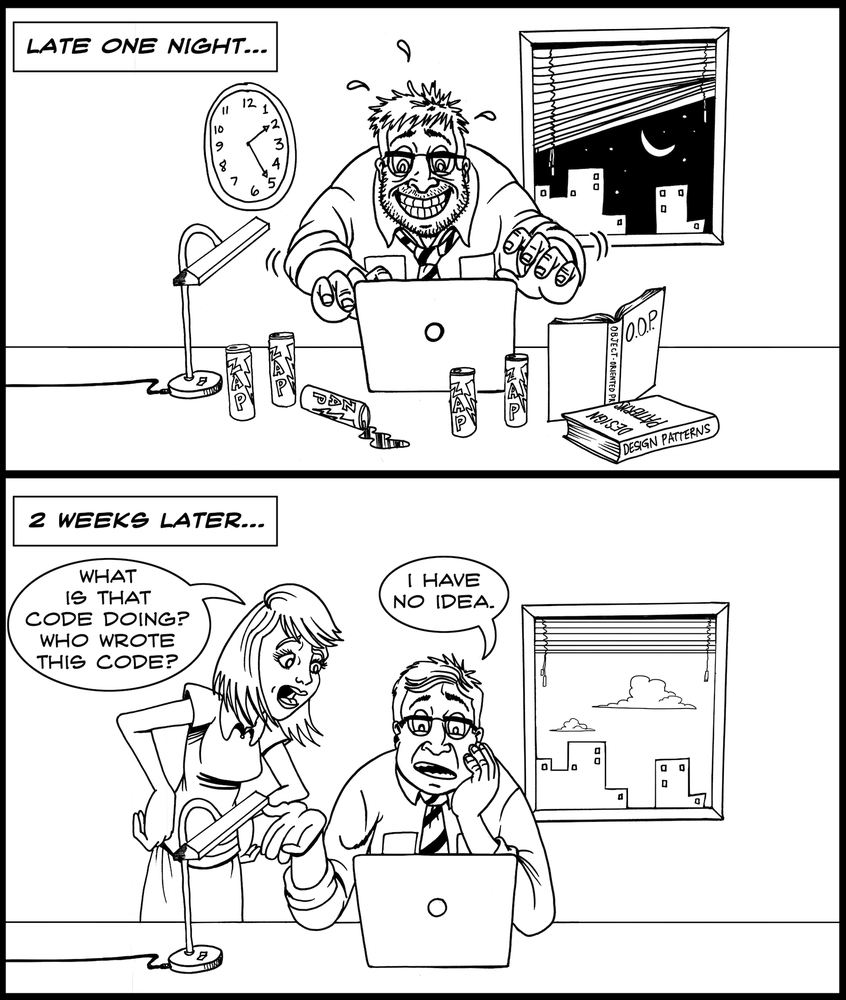
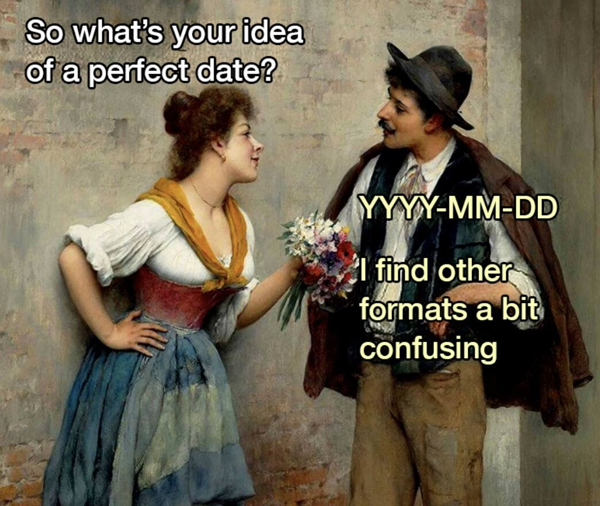

Sys.Date()[1] "2025-01-26"2025-01-27
2 + 2 is evaluated by submitting the numbers 2 and 2 to the addition function2 + 2 is evaluated, the number 4 is returnedSys.Date()[1] "2025-01-26"getwd()[1] "/home/jstevens/github/dpavir2025/slides"They include argument names and values
# the best way
x <- 9
# avoid this
y = 10
# definitely don't do this
11 -> zNote
You can assign multiple objects at the same time:
# chain assignments of the same value to different objects
a <- b <- c <- 0x <- 9 # assign value 9 to object xx # print contents of object x to console[1] 9(x <- 9) # add parentheses to print to console when assigning[1] 9When a function hits a problem that stops it from completing
mean()Error in mean.default() : argument "x" is missing, with no defaultWhen a function completes but something strang happens, so it alerts you
When a function just wants to let you know something
── Attaching core tidyverse packages ──────────────────────── tidyverse 2.0.0 ──
✔ dplyr 1.1.4 ✔ readr 2.1.5
✔ forcats 1.0.0 ✔ stringr 1.5.1
✔ ggplot2 3.5.1 ✔ tibble 3.2.1
✔ lubridate 1.9.4 ✔ tidyr 1.3.1
✔ purrr 1.0.2
── Conflicts ────────────────────────────────────────── tidyverse_conflicts() ──
✖ dplyr::filter() masks stats::filter()
✖ dplyr::lag() masks stats::lag()
ℹ Use the conflicted package (<http://conflicted.r-lib.org/>) to force all conflicts to become errors
Computer
Ourselves
Others
Code should be written to minimize the time it would take for someone else to understand it.
mean1<-mean (x[1,4:10],na.rm=TRUE)+0.5mean1 <- mean(x[1, 4:10], na.rm = TRUE) + 0.5mean(x, T)mean(x, na.rm = TRUE)for(i in 1:10) {
for(j in 1:5) {
print(x[i, j])
}
}for(i in 1:10) {
for(j in 1:5) {
print(x[i, j])
}
}if (x > 5) {print("Too big!")}if (x > 5) {
print("Too big!")
}Use <- as assignment operator
Use space between operators (*, =, ==) and after commas
Do not use space between function and parentheses
Use indents to separate nested components (Ctrl+I)
Write out argument names
Write out TRUE and FALSE
Use ", not ', for quoting text unless it already contains double quotes
Be nice to machines
Be nice to humans
Make sorting and searching easy
my_file.R not My filé$.R
foo.R and Foo.R
expt1_cond2_subj114.csvx) but not too descriptive (this_is_my_object)a ≠ A)prelim_analysis_expt1.RYYYY-MM-DD
2021-04-06_prelim_analysis_expt1.Rmdprelim_analysis_expt1_2021-04-06.Rmd01_preface.Rmd02_introduction.Rmd
Comments
Everything on a line after a hashtag
#is a commentComments are not evaluated
Comments can be used as notes for the reader and to prevent code from being evaluated